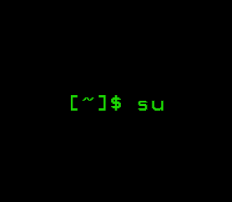
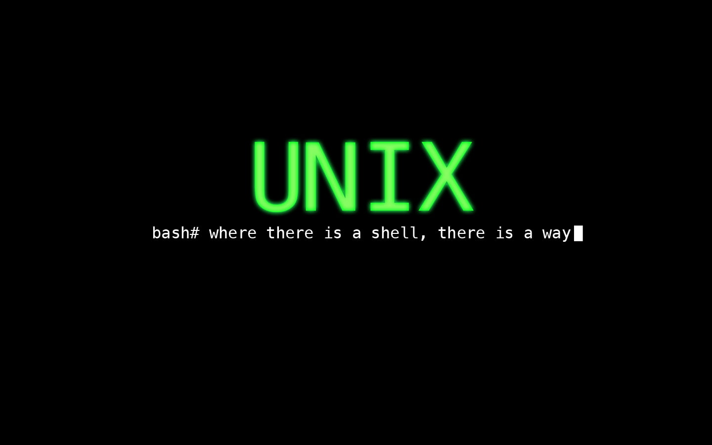
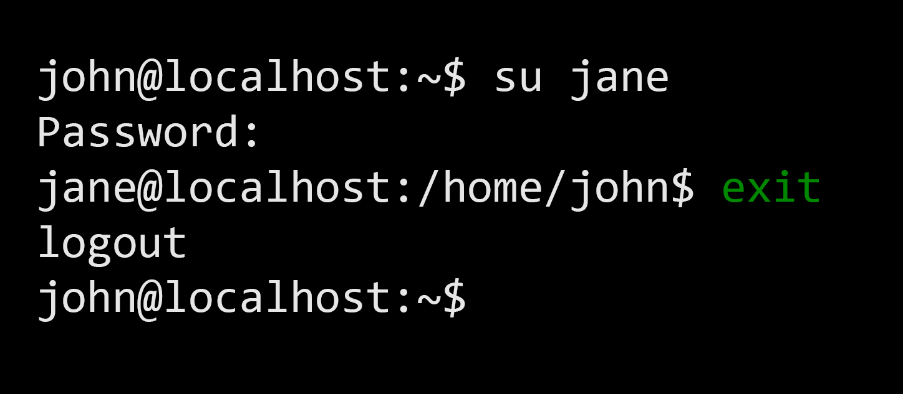

UNIX USAGE
The Unix order su, which means 'substitute client' (initially 'superuser '[failed verification]), is utilized by a PC client to execute orders with the honors of another client account. Whenever executed it conjures a shell without changing this functioning registry or the client climate. When run from the command line, su asks for the target user's password, and if authenticated, grants the operator access to that account and the files and directories that account is permitted to access.
At the point when the order is utilized without determining the new client id as an order line contention, it defaults to utilizing the superuser account (client id 0) of the framework. The order su, including the Unix authorizations framework and the setuid framework call, was essential for Version 1 Unix. Encoded passwords showed up in Version 3. The order is accessible as a different bundle for Microsoft Windows as a component of the UnxUtils assortment of local Win32 ports of normal GNU Unix-like utilities.
When run from the command line, su asks for the target user's password, and if authenticated, grants the operator access to that account and the files and directories that account is permitted to access.
When utilized with a dash (su - ) it tends to be utilized to begin a login shell. In this mode clients can accept the client climate of the objective client.
SOME USEFUL COMMANDS
FILES
ls - list items
ls -l - lists your files in 'long format'
ls -a - lists all files
more filename - shows the first part of a file
rm filename - removes a file
cp filename1 filename2 - copies a file
mv filename1 filename2 - moves a file
emacs filename - an editor that lets you create and edit a file
DIRECTORIES
mkdir dirname - make a new directory
cd dirname - change directory
cd - back to home directory
pwd - tells you where you are
RM-RF COMMAND - This command is used to delete the directory In the Unix system.
ABOUT YOUR (ELECTRONIC) SELF
whoami - returns your username
password - lets you change your password
ps -u yourusername - lists your processes
kill PID - ends the process with the ID you gave.
quota -v - shows how much disk space you have for storing files
du filename - shows the disk usage of the files and directories in
filename
du -s - gives you only total
last yourusername -lists you last logins
CONNECTING
nn - allows you to read news
rlogin hostname - lets you connect to a remote host
telenet hostname - lets you connect to a remote host
ftp hostname - lets you download files from a remote host
lynx - lets you browser the web from an ordinary terminal